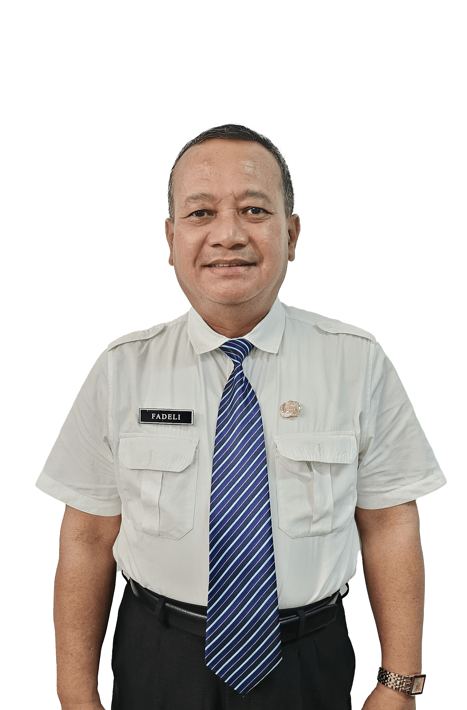

| NIP | 19700101 199001 1 001 |
| Jabatan | Kepala Sekolah |
| Pendidikan | S2 Manajemen Pendidikan |
| kepalasekolah@srma24.sch.id |
Assalamu'alaikum Warahmatullahi Wabarakatuh.
Puji syukur ke hadirat Allah SWT atas segala rahmat dan karunia-Nya sehingga keluarga besar SRMA 24 Kediri dapat terus tumbuh menjadi lingkungan pendidikan yang penuh semangat, karakter, dan harapan. Sekolah Rakyat hadir sebagai program strategis nasional yang diinisiasi atas instruksi Prabowo Subianto untuk memperluas akses pendidikan bagi masyarakat yang belum memperoleh kesempatan belajar yang layak. Program ini menjadi wujud nyata komitmen bahwa pendidikan adalah hak setiap anak bangsa tanpa memandang latar belakang ekonomi maupun sosial. Di SRMA 24 Kediri, pendidikan tidak hanya berorientasi pada pencapaian akademik, tetapi juga pada pembentukan karakter dan penguatan nilai-nilai kehidupan. Melalui berbagai kegiatan pembinaan, siswa dibekali kedisiplinan, kemandirian, keterampilan hidup, serta rasa tanggung jawab dalam kehidupan sehari-hari. Pembiasaan positif, pelatihan life skill, dan berbagai kegiatan edukatif menjadi bagian penting dalam membentuk generasi yang tangguh secara mental dan moral. Selain pembelajaran akademik, siswa juga mendapatkan kesempatan untuk mengembangkan keterampilan masa depan melalui kegiatan seperti coding, membatik, dan berbagai aktivitas kreatif lainnya. Kehidupan berasrama menjadi sarana belajar untuk menumbuhkan sikap saling menghargai, bekerja sama, serta memperkuat kepedulian sosial yang sangat dibutuhkan dalam kehidupan bermasyarakat. Sekolah Rakyat mengajarkan pentingnya kemandirian dan kemampuan menghadapi tantangan kehidupan. Di sinilah para siswa belajar membangun kebiasaan baik, memahami nilai-nilai kehidupan, serta mengembangkan potensi diri sebagai bekal menuju masa depan yang lebih baik. Kami berharap website SRMA 24 Kediri dapat menjadi wadah inspirasi, kreativitas, dan ekspresi bagi seluruh siswa untuk terus berkarya. Semoga melalui media ini lahir berbagai gagasan positif yang menunjukkan bahwa Sekolah Rakyat mampu mencetak generasi yang unggul, berkarakter, dan siap menghadapi tantangan zaman. Teruslah belajar, berkembang, dan menjadi kebanggaan bagi keluarga, sekolah, serta bangsa Indonesia.
Wassalamu'alaikum Warahmatullahi Wabarakatuh.